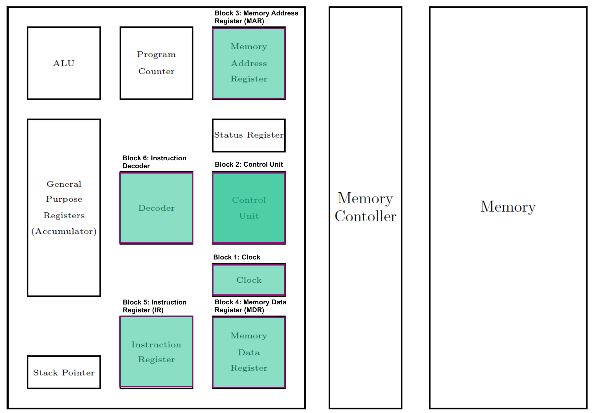
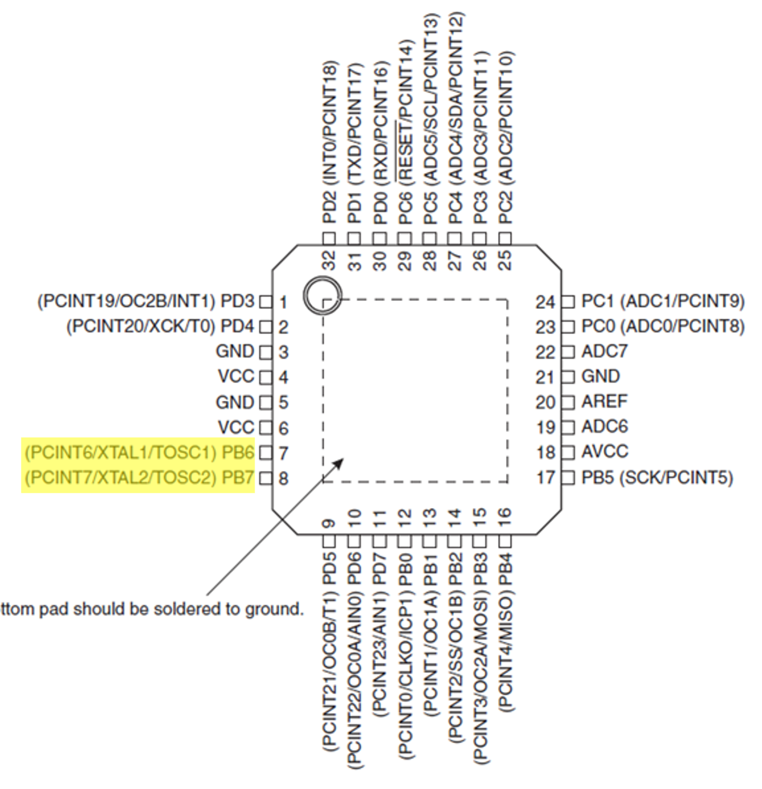
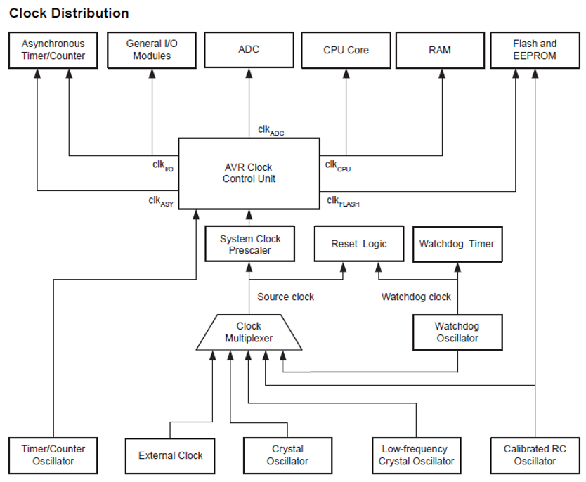
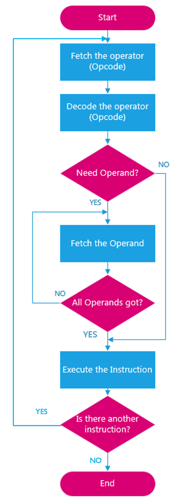
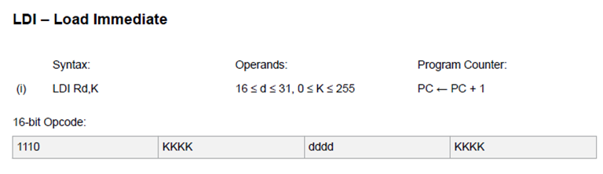
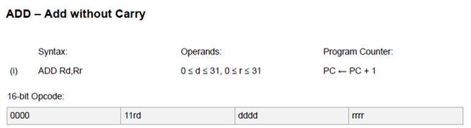
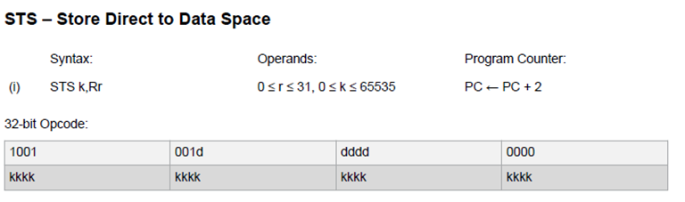

Aside from the program counter, these are registers which the programmer can directly access and manipulate.
In this section, we will look at some of the other components in the microcontroller CPU including the control unit, clock, memory address register, memory data register, instruction register and decoder.
After introducing these components an example program will be demonstrated that is written in C language, showing the translation to assembly language using the listing file, followed by an explanation of how the program is executed through the fetch-decode-execute cycle.
Figure 2: The CPU core with program counter, status and control register, general registers, and ALU highlighted.
Additional components
Simplified block diagram of the microcontroller core

Figure 3: Simplified block diagram showing the major components of a microcontroller
Block 1: Clock
The clock generates a signal that oscillates between a high and a low state and acts like a metronome which coordinates/synchronizes the actions of the different microcontroller elements.
Figure 4: A typical clock signal. The frequency is \(f=0.5/T_\mathrm{on}\) if \(\mu = 0.5\).
Internal Clock

Figure 5: Pins reserved for an external clock signal on the Atmel ATmega328 microcontroller.
External clock
Figure 6: Examples of the crystal oscillators used with microcontrollers. a) The circuit symbol for a crystal; b) A 16Mhz crystal packaged as a component; c) the external crystal provided with the ATmega328 chip on the Arduino nano board.
The Atmel ATmega328 clock

Figure 7: Clock distribution of the ATmega328 (Reproduced from Figure 8.1 of the Atmel ATmega328 data sheet).
The CKSEL3..0 are special memory locations in flash memory (“fuses”) that are used to set the clock sources as shown in Table 9.1 of the data sheet reproduced below.
Programmer’s registers for clock control
There are two registers accessible to the programmer with respect to the clock. These are
OSCCAL - Oscillation Calibration Register used to trim the calibrated internal RC oscillator to remove process variations from the oscillator frequency.y
CLKPR – Clock Prescale Register whose bits define the division factor between the selected clock source and the internal system clock. These bits can be set at run-time to vary the clock frequency to suit the application requirements.
Block 2: Control Unit
The control unit is responsible for
Coordinating and controlling activities of the CPU;
Managing data flow between other components and the CPU;
Acknowledging and accepting the next instruction; and
Storing the resulting data back into a memory unit.
Block 3: Memory Address Register (MAR)
During operation the address in the program counter is loaded into the Memory Address Register and a request is sent onto the address bus to retrieve the data stored at that memory location.
Block 4: Memory Data Register (MDR)
The data at a particular memory location is loaded from the data bus into the Memory Data Register before being passed to the instruction register or being operated on.
Block 5: Instruction Register (IR)
After fetching an instruction from program memory, the microcontroller stores it in the instruction register.
Block 6: Instruction Decoder (ID)
The instruction decoder decodes the instruction opcode from the instruction register and generates appropriate control signals to execute the instruction.
It contains a lookup table featuring a mapping of all binary instructions in the microcontroller’s instruction set architecture.
Once an instruction arrives at the instruction register it is passed to the decoder. Once decoded the output is passed to the control unit to select the correct hardware for the operation or to get the next word of data from memory.
Busses
Figure 8: The three busses in the ATmega328 microntroller.
Each instruction is carried out by a sequence of operations, known as the fetch-decode-execute cycle illustrated as a flow chart in Figure 9.
Flowchart of fetch-decode-execute cycle

Figure 9: A flow chart illustrating the fetch-decode-execute cycle
Fetch
Fetch the operator code from memory via the data bus and store it in the instruction register.
The address of the instruction to be fetched is stored in the program counter which is then loaded into the Memory Address Register and a request is sent onto the address bus.
The program counter is then incremented to point to the next sequential memory address.
The contents of the memory location are then transferred through the data bus to the Memory Data Register and then into the instruction register before passing to the decoder.
Decode
Decode the operator code within the instruction decoder and determine the nature of the operation specified (load immediately, load a byte from memory, load a word from memory). Fetch further data using the address and data busses as necessary based on the instruction decoded.
Execute
*Execute the instruction on the necessary operands.
Continue
The fetch-decode-execute is now complete and starts again for the next code memory location indicated by the program counter.
Fetch-Decode-Execute cycle algorithm
The process is illustrated as an algorithm below
Step 1:
MAR <- (PC)
Step 2:
(PC) <- (PC) + 1
Step 3:
MDR <- (MAR)
Step 4:
IR <- (MDR)
An Example Program
Recall the digital I/O program…
Listing 1: Digital I/O program in C
#include <stdint.h>//I/O and ADC Register definitions taken from datasheet#define PORTD (*(volatileuint8_t*)(0x2B))#define DDRD (*(volatileuint8_t*)(0x2A))#define PIND (*(volatileuint8_t*)(0x29))#define PORTB (*(volatileuint8_t*)(0x25))#define DDRB (*(volatileuint8_t*)(0x24))#define PINB (*(volatileuint8_t*)(0x23))int main(void){//Set Data Direction Registers DDRD = DDRD &0b11110011;//setup bits 2 and 3 of port D as inputs DDRB = DDRB |0b00000011;//setup bits 0 and 1 of port B as outputs PORTB = PORTB &0b11111100;//both pins B0 (D8) and B1 (D9) start low PORTD = PORTD |0b00001100;// Enable the pull up resistor for bits 2 and 3 of port Dfor(;;){if((PIND &0b00000100)==0){ PORTB = PORTB |0b00000001;//sets port B, bit 0 to logic 1/high, switches the LED connected to D8 on}elseif((PIND &0b00001000)==0){ PORTB = PORTB |0b00000010;//sets port B, bit 1 to logic 1/high, switches the LED connected to D9 on}else{ PORTB = PORTB &0b11111100;//sets bits 0-5 of port B to logic 0/low, switches off both the LED's}}}
00000080 <main>:
#define PINB (*(volatile uint8_t *)(0x23))
int main(void)
{
//Set Data Direction Registers
DDRD = DDRD & 0b11110011; //setup bits 2 and 3 of port D as inputs
80: 8a b1 in r24, 0x0a ; 10
82: 83 7f andi r24, 0xF3 ; 243
84: 8a b9 out 0x0a, r24 ; 10
DDRB = DDRB | 0b00000011; //setup bits 0 and 1 of port B as outputs
86: 84 b1 in r24, 0x04 ; 4
88: 83 60 ori r24, 0x03 ; 3
8a: 84 b9 out 0x04, r24 ; 4
PORTB = PORTB & 0b11111100; //both pins B0 (D8) and B1 (D9) start low
8c: 85 b1 in r24, 0x05 ; 5
8e: 8c 7f andi r24, 0xFC ; 252
90: 85 b9 out 0x05, r24 ; 5
PORTD = PORTD | 0b00001100; // Enable the pull up resistor for bits 2 and 3 of port D
92: 8b b1 in r24, 0x0b ; 11
94: 8c 60 ori r24, 0x0C ; 12
96: 8b b9 out 0x0b, r24 ; 11
for(;;)
{
if((PIND & 0b00000100) == 0)
98: 4a 99 sbic 0x09, 2 ; 9
9a: 02 c0 rjmp .+4 ; 0xa0 <main+0x20>
{
PORTB = PORTB | 0b00000001; //sets port B, bit 0 to logic 1/high, switches the LED connected to D8 on
9c: 28 9a sbi 0x05, 0 ; 5
9e: fc cf rjmp .-8 ; 0x98 <main+0x18>
}
else if ((PIND & 0b00001000) == 0)
a0: 4b 99 sbic 0x09, 3 ; 9
a2: 02 c0 rjmp .+4 ; 0xa8 <main+0x28>
{
PORTB = PORTB | 0b00000010; //sets port B, bit 1 to logic 1/high, switches the LED connected to D9 on
a4: 29 9a sbi 0x05, 1 ; 5
a6: f8 cf rjmp .-16 ; 0x98 <main+0x18>
}
else
{
PORTB = PORTB & 0b11111100; //sets bits 0-5 of port B to logic 0/low, switches off both the LED's
a8: 85 b1 in r24, 0x05 ; 5
aa: 8c 7f andi r24, 0xFC ; 252
ac: 85 b9 out 0x05, r24 ; 5
ae: f4 cf rjmp .-24 ; 0x98 <main+0x18>
000000b0 <_exit>:
b0: f8 94 cli
000000b2 <__stop_program>:
b2: ff cf rjmp .-2 ; 0xb2 <__stop_program>
Fetch
Decode
Execute
Assembly to Machine Code
Table 2: Assembly to machine code
Assembler
Machine Code
Documentation
ldi r16, 0b01111001
1110 0110 0001 0111

ldi r17, 0b01100111
1110 0110 0001 0111
See cell above
add r16, r17
0000 1111 0000 0001

sts 0xFF00, r16
1001 0011 0000 0000 1111 1111 0000 0000

Summary
In this section we have:
Recapped the core components of the AVR CPU including the ALU, general purpose registers, program counter, stack pointer and status register as well as their function in the microcontroller.
Looked at the function of some of the other components within the CPU including the clock, memory address register, memory data register, instruction register and decoder.
Looked at an example of what happens during program execution through the fetch-decode-execute cycle.
On Canvas
This week on the canvas course pages, you will find a short quiz to test your knowledge on these topics.
The status and control register also contains bits that can change the operation of the microcontroller. For example the global interrupt enable bit is set if interrupts have been enabled. Interrupts will be discussed in EG-252 next year.
The duty cycle is \(\mu=T_\mathrm{on}/\left(T_\mathrm{on}+T_\mathrm{off}\right)\) and \(\mu = 0.5\) (50%) if \(T_\mathrm{on}=T_\mathrm{off}\). That is for half of a cycle (i.e. for \(T_\mathrm{on}\)s) it is in a high state and for the other half of the cycle (for \(T_\mathrm{off}\)s) it is in a low state.
If the frequency is \(x\)MHz, then the microcontroller can execute \(x\) million instructions a second and each instruction takes 1/x microseconds to execute. Therefore, for the ATmega328 with internal clock the execution speed is 0.125\(\mu\)s per instruction. For the ATmega328 on the Arduino nano it is half this.
The carry flag C comes from the status register.
This file is not completely accurate as the assembler used has assumed the memory space is 8-bits wide where as it is actually 16-bits wide. This means each memory address shown should be divided by 2.